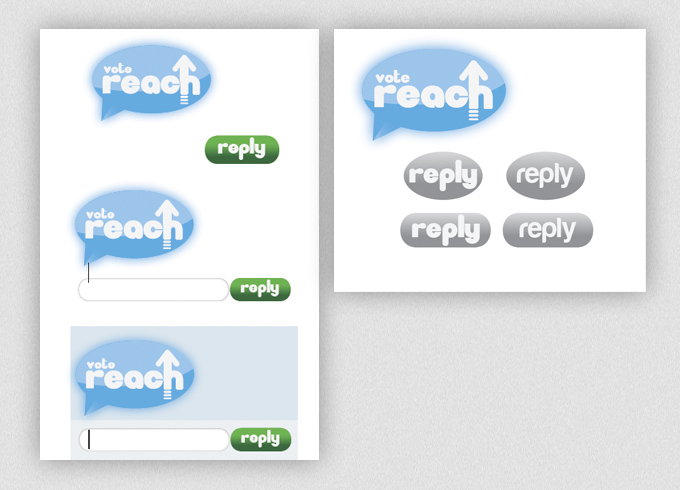

For this project, I worked with the student political party, "Reach," in designing their brand identity for the Ohio University Student Senate elections in April 2012. I designed their party logo and also created mockups for their Flash-based website.
The idea behind the name "Reach" was that the party was to work on reaching out to all students through multiple mediums including the internet and social media. I drafted a variety of logos to try and convey movement and give a feel of modern social media. The idea of the arrow came up during early planning as a way to show progress and was integrated into the final logo.
The social media aspect of the brand identity not only was brought into the logo, but also became a part of the final site. To enter the site, we wanted to make it feel like a conversation. Above are some initial ideas to give the user a sense communication with the site through the "reply" button.